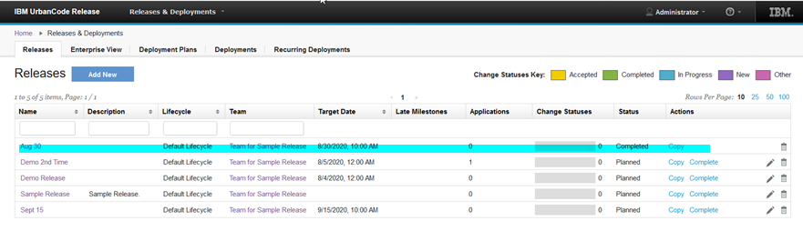

This article was originaly published in 2020.09.29
6.2.5
This release of IBM UrbanCode Release is a maintenance release and includes various bug fixes and enhancements. This release is recommended for all customers.
Mark a release as complete
The status of a release can be changed to complete when all deployments are complete or when no deployments are associated with the release. By marking the release complete, no further actions can be performed on it. All release and deployment related operations are disabled for the release.
This feature requires that the Release Completion permission be assigned. By default, this permission is assigned to the Release Manager role.

Support added for Security Assertion Markup Language (SAML) SSO connection
You can now connect the UrbanCode Release server using a SAML SSO connection. SAML version 2.0 or later is supported.